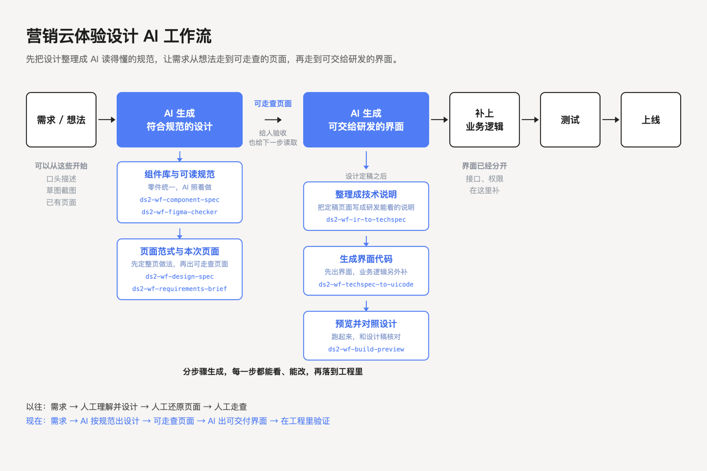
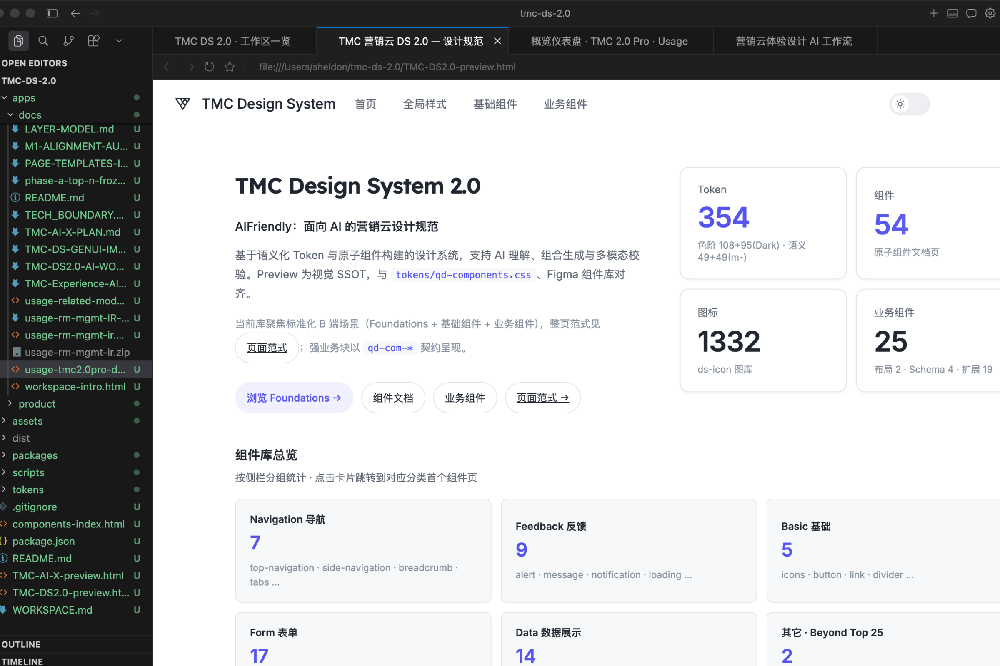
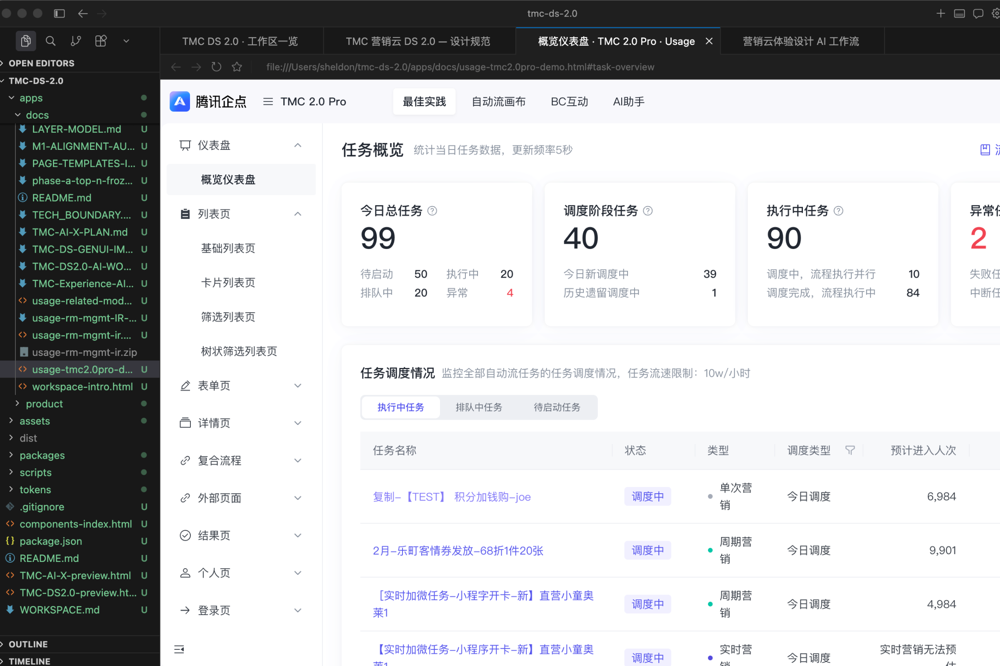
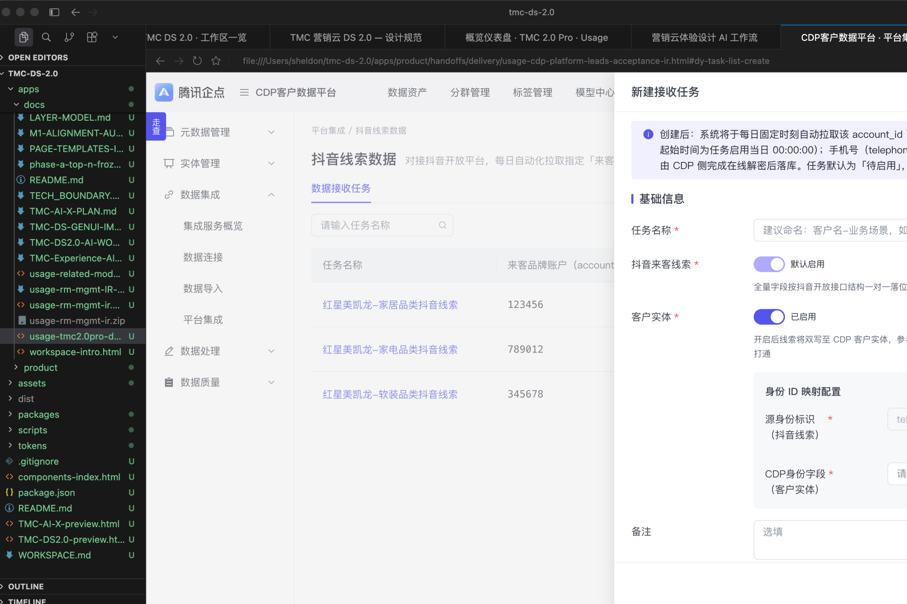

真实任务
在实际使用中检验规则与复杂分支。
在实际使用中检验规则与复杂分支。
规则分散、过程冗余、复杂分支难覆盖。
Copilot、三栏任务空间与结构化产物。
保留判断与产物，供后续任务复用。
三层价值验证
| 验证层级 | 核心问题 | 观察信号 |
|---|---|---|
| 01 产品体验 | 任务有没有完成 | 首次价值 · 重复使用 · 真实任务渗透 |
| 02 体验护栏 | 质量有没有守住 | 建议采纳 · 人工修改 · 规则纠错 |
| 03 业务效果 | 结果有没有出现 | 触达转化 · ROI · 实验复盘 |
团队交付口径：活动搭建 2–3 天 → 约 10 分钟 · 相关环节准确率 90%+
让交付反馈进入下一次任务，持续验证体验是否有效。
跨角色使用 AI 产出界面
组件规则、页面范式、使用指引
AI 生成与检查，团队判断与维护
流程、规则、交付反馈
信息归纳、假设探索、状态检查
业务取舍、人机分工、风险边界
组件规则、页面范式、使用指引
在后续项目中复用




让组件规范与页面范式成为 AI 可用的设计上下文，由团队负责判断与维护。
规则、数据、知识与真实流程，为 Agent 完成任务提供依据。
低风险步骤自主推进；策略、人群、权益与执行仍由人确认。
理解、确认与结果进入业务界面，逐步形成 Agent-first 习惯。
价值闭环
Agent 发现机会、形成方案并组织执行；SaaS 承担数据、权限、审批、执行和审计。
把已验证的人机协作方式扩展到更多增长场景，让洞察、决策、执行与复盘持续产生可用结果。
让 AI 承接复杂过程，让用户专注判断与决策。